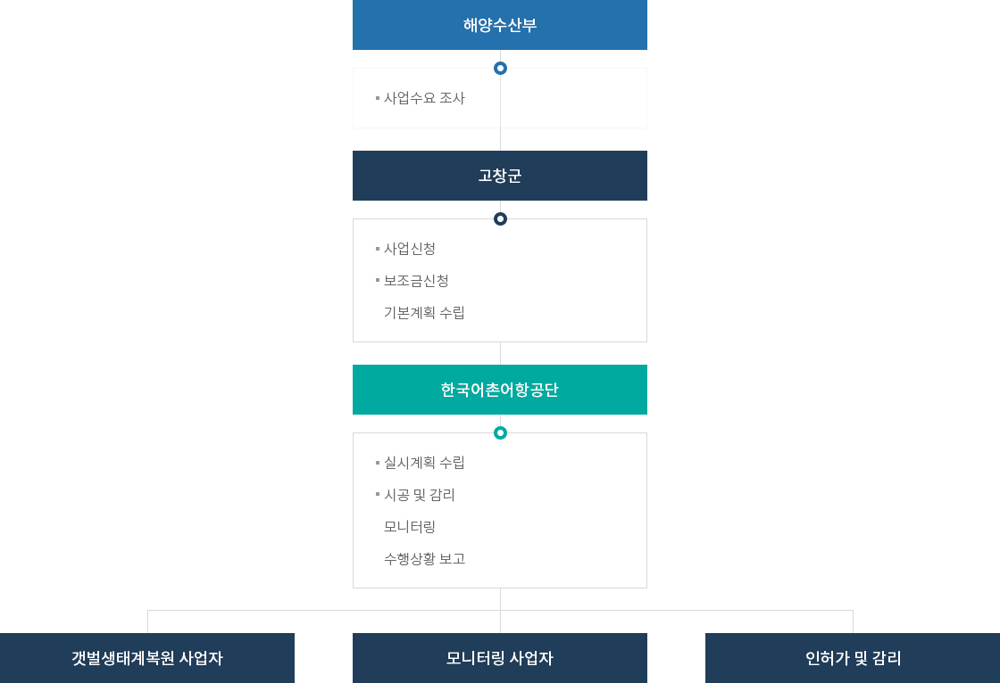
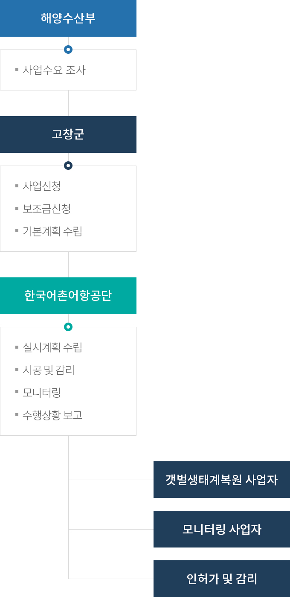

갯벌 생태계 복원
- 홈
- 사업소개
- 역동하는 어장
- 갯벌 생태계 복원
추진계획
- (2017년 07월 ~ 2018년 05월) 기본계획 수립 및 승인(고창군 시행)
- (2019년 09월 ~ 2020년 08월) 실시계획 수립 및 승인
- (2020년 09월 ~ 2021년 03월) 일반해역이용협의
- (2020년 09월 ~ 2022년 06월) 갯벌생태계 모니터링
- (2020년 10월 ~ 2021년 04월) 소규모환경영향평가
- (2020년 11월 ~ 2022년 04월) 매장문화재지표조사
- (2021년 01월 ~ ) 갯벌복원사업 시공 및 감리
추진체계


- 해양수산부
- 사업수요 조사
- 고창군
- 사업신청
- 보조금신청
- 기본계획 수립
- 한국어촌어항공단
- 실시계획 수립
- 시공 및 감리
- 모니터링
- 수행상황보고
- 갯벌생태계복원 사업자, 모니터링 사업자, 인허가 및 감리